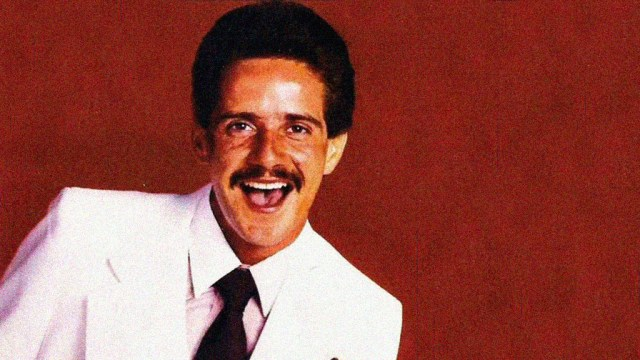

Frankie Ruiz
Better known as El Papá de la Salsa (March 10, 1958 – August 9, 1998)

Art from the Album "Solista pero no solo"
Frankie's life and legacy
- Frankie Ruiz was born in Paterson, New Jersey to Frank Torresola and Hilda Ruiz, a Puerto Rican couple who had moved to the city.
- At the age of 5, Ruiz played percussion instruments at the Roberto Clemente Park in Trenton and at other city venues.
- He became interested in a salsa band called La Solución, directed by Roberto Rivera, which he was able to join after multiple attempts.[14] With this band, Ruiz re-recorded a new version of "Salsa Buena". As he became its lead singer and recorded the hit single titled "La Rueda" ("The Wheel"), the band was renamed Frankie Ruiz y La Solución and he toured with it for three years.[16] Ruiz became an alcoholic and drug user following the death of his mother in a car accident and the murder of his girlfriend, an aspect of his personal life that was emphasized by the media.
- Ruiz's first album as a soloist, Solista pero no Solo, was produced by TH-Rodven Records and directed by Willie Sotello in 1985. Led by the singles "Tú Con Él" and "La Cura", the record became the number-one Billboard Tropical Album. While Ruiz was involved in an international tour, the album reached the top spot on this list twice more, alternating with Hansel y Raúl. With singles "Esta cobardía", "Como le gustan a usted", "El camionero", "Cosas Nativas", and "Ahora me toca a mí" meeting lesser success, Solista pero no Solo ended 1986 as the best-selling Tropical/Salsa album of the year in the United States.
- In 1989, Ruiz was involved in an altercation with a flight attendant for which he was sentenced to three years at a federal prison in Tallahassee, Florida. Rodven records released a new album, Más Grande Que Nunca, which contained the hit "Deseándote". The album achieved platinum sales status and which were used to sustain his family. While in jail, Ruiz underwent a detoxification process. He was allowed a temporary return to Puerto Rico, where he did some recording with Vinny Urrutia.
- His final album Tranquilo was recorded in a studio in Santurce, Puerto Rico and was released in 1996. Its lead single, "Ironía", became another number one song on the Tropical Songs chart and ended the year as the best-performing Tropical/Salsa song. The song won the award for "Tropical/Salsa Hot Latin Track of the Year"
- In 1996, Ruiz's liver began to fail leading to a hospitalization and a temporary coma, during which his vocal cords were damaged when an intubation process was undertaken.However, by the morning of August 9 his condition was critical and continued worsening until 11:40 p.m., when he died at the age of 40 in 1998